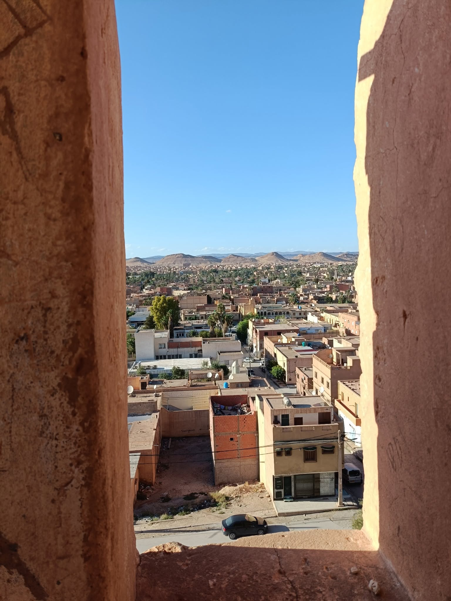

Fort Tizegrarine
(Laghouat, 1857)
Au nord-est,
là où la pierre parle,
Un fort se dresse,
grave et calme.
Ses murs ont bu
le vent du sable,
Et gardent l’ombre
d’un ancien drame.
Le soleil polit
L’ocre des créneaux,
Chaque fissure
y garde un nom,
Souffle de guerre,
soupir d’homme,
Silence scellé
d’un vieux sermon.
Tizegrarine,
fort des mémoires,
Ton cœur bat
sous la poussière,
Et dans la brume
du soir,
Ton ombre veille
sur la terre.
Laghouat te regarde
encore,
Sentinelle de pierre
et d’histoire,
Tandis que le vent du Sud
chuchote :
— Ici, rien ne meurt,
tout est mémoire. —
Djamel Metref
At Yenni le 3 novembre 2025

← Tous les poèmes
Fort Tizegrarine
Carnets de voyages · Histoire et paix